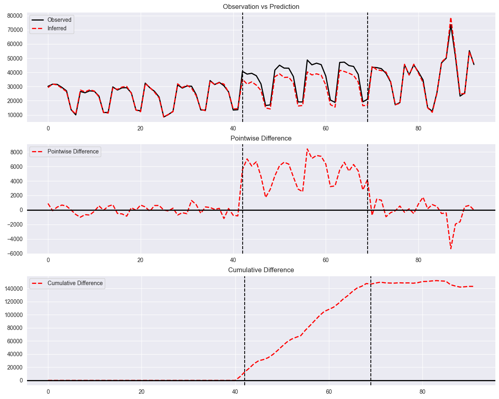
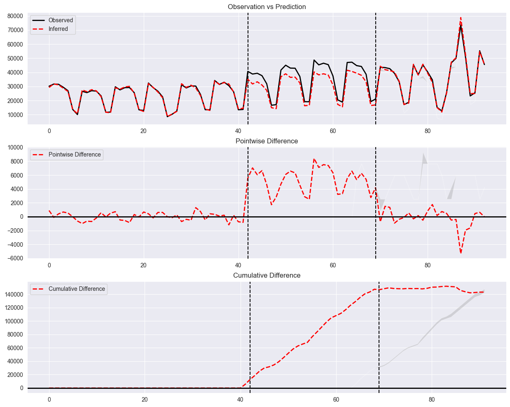
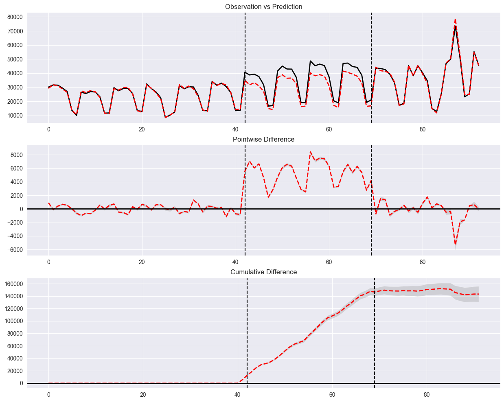
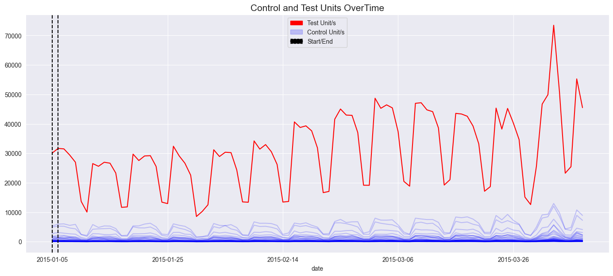
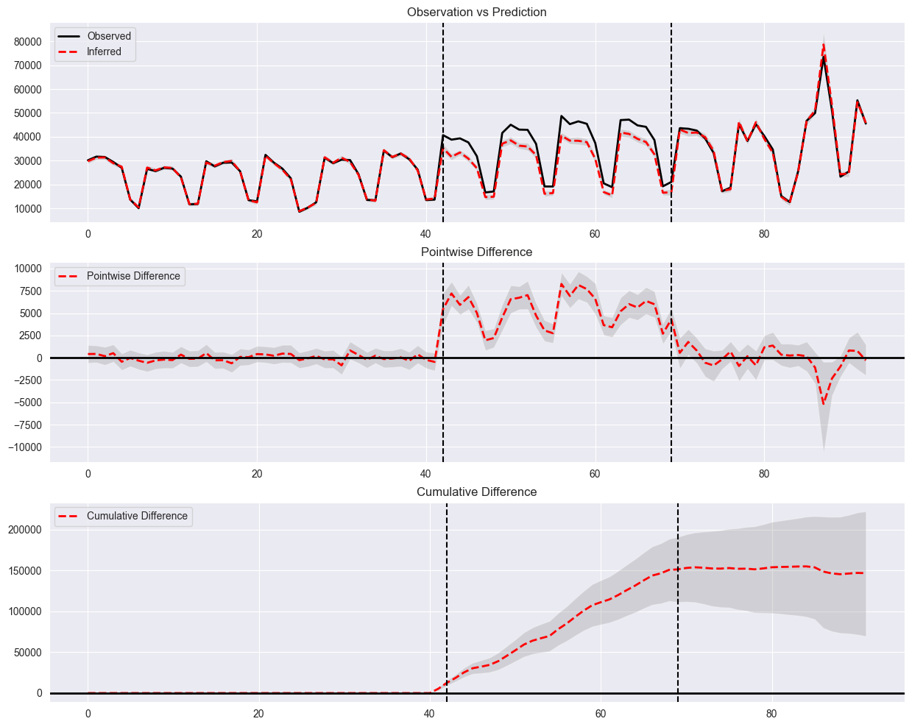
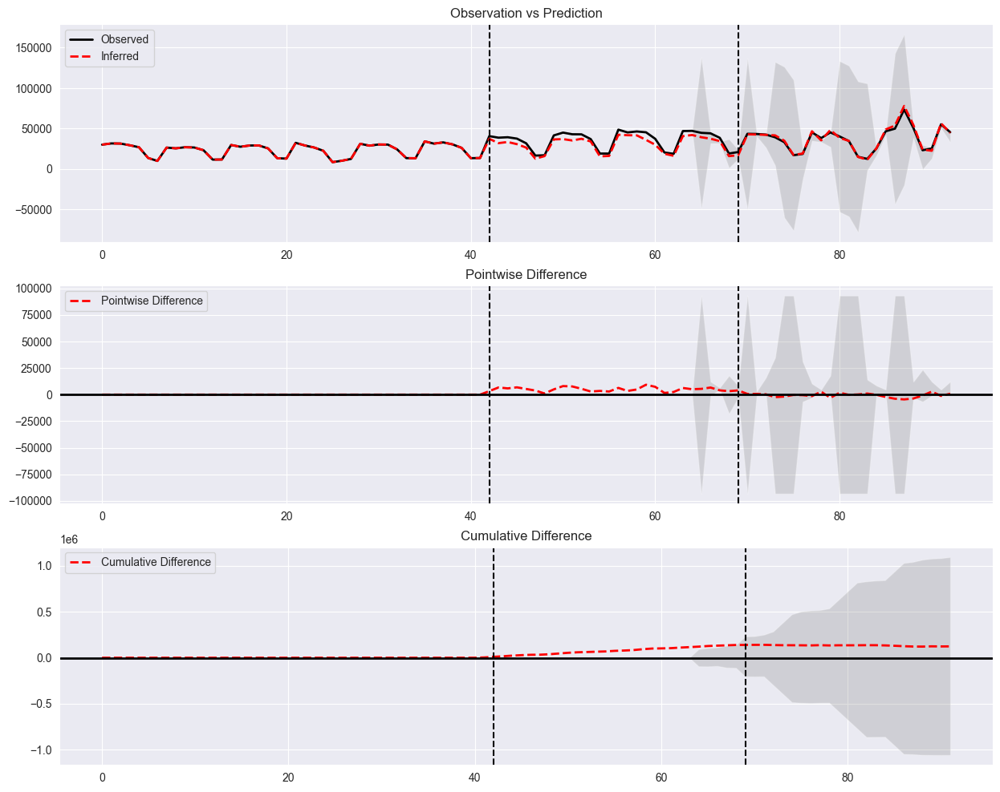
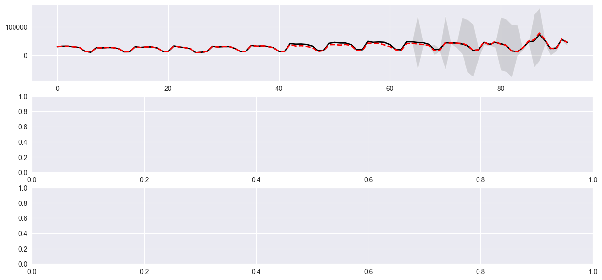
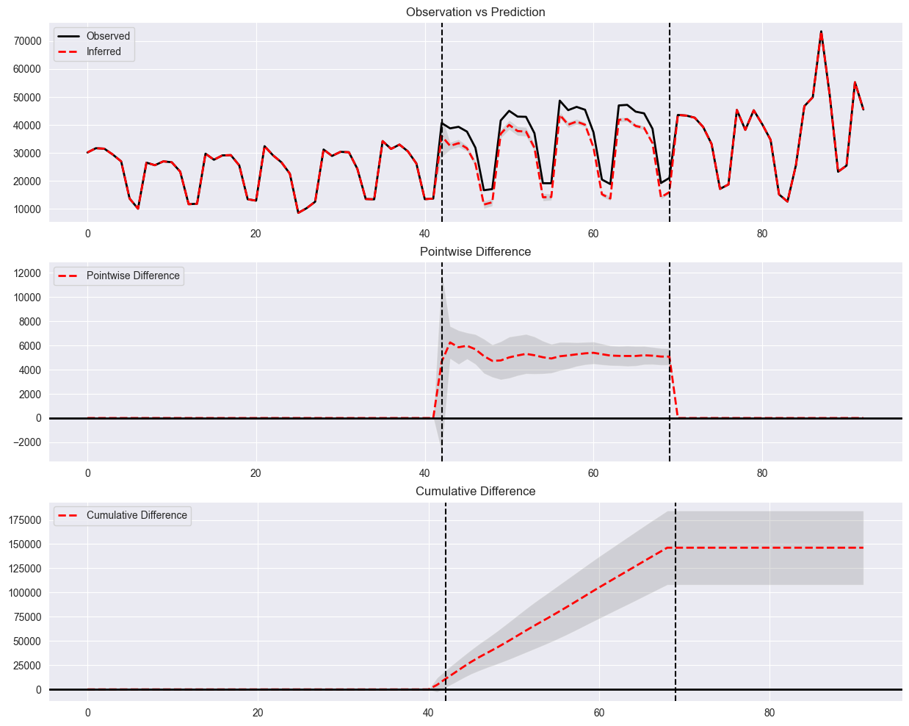

Time-Based Regression (TBR)
Google’s Time-Based Regression (TBR) is a methodology designed to analyze geo experiments, particularly in the context of online advertising. Here’s a brief overview:
Background
Geo Experiments: These are experiments conducted across different geographical regions to measure the impact of advertising campaigns. Traditional randomized controlled trials (RCTs) are often challenging to implement in this context due to practical constraints like budget and the need for specific regions to be included in the experiment1.
Challenges with RCTs: Randomization can be difficult when regions (geos) are significantly different from each other or when only a few regions are available for experimentation1.
Concepts
Time-Based Regression Model: The TBR model predicts the time series of the counterfactual market response, allowing for direct estimation of the cumulative causal effect at the end of the experiment. This approach helps in providing straightforward causal estimates even when randomization is not feasible.
References
Google Research Blog. “Time-Based Regression for Geo Experiments.” Retrieved from Google Research Blog.
Google AI Blog. “Improving Geo Experiments with Time-Based Regression.” Retrieved from Google AI Blog.
Google Research. “Time-Based Regression: A New Method for Geo Experiments.” Retrieved from Google Research.
Counterfactual Prediction
Causal Effect Estimation
Model Parameters
[1]:
import os
import sys
sys.path.insert(0, os.path.abspath('../../'))
from panel_exp.panel_data import long_df_to_paneldataset, PanelDataset, TimePeriod
from panel_exp.methods.tbr import TBR, TBRRidge
from panel_exp.methods.bayesian_regression import BayesianTBR, BayesianTBRHorseShoe
import pandas as pd
import matplotlib.pyplot as plt
long_df = pd.read_csv('google_sales.csv')
/Users/christopherb/opt/anaconda3/envs/py310/lib/python3.10/site-packages/tqdm/auto.py:21: TqdmWarning: IProgress not found. Please update jupyter and ipywidgets. See https://ipywidgets.readthedocs.io/en/stable/user_install.html
from .autonotebook import tqdm as notebook_tqdm
[2]:
long_df.head()
[2]:
| date | geo | sales | cost | group | |
|---|---|---|---|---|---|
| 0 | 2015-01-05 | 1 | 7227.32 | 0.0 | 2 |
| 1 | 2015-01-05 | 10 | 1827.21 | 0.0 | 1 |
| 2 | 2015-01-05 | 100 | 23.98 | 0.0 | 1 |
| 3 | 2015-01-05 | 11 | 1501.10 | 0.0 | 1 |
| 4 | 2015-01-05 | 12 | 1371.61 | 0.0 | 2 |
[3]:
pre_test_start = '2015-01-05'
pre_test_end = '2015-02-15'
test_start = '2015-02-16'
test_end = '2015-03-15'
[4]:
treated_units = long_df[long_df.group==2].geo.unique()
control_units = long_df[long_df.group==1].geo.unique()
[5]:
wide_df = pd.pivot_table(long_df, index='geo', columns='date', values='sales', aggfunc=sum, fill_value=0)
/var/folders/cd/dfrqgp4s4ll55cwb7rtgccbw0000gq/T/ipykernel_94278/1368796011.py:1: FutureWarning: The provided callable <built-in function sum> is currently using DataFrameGroupBy.sum. In a future version of pandas, the provided callable will be used directly. To keep current behavior pass the string "sum" instead.
wide_df = pd.pivot_table(long_df, index='geo', columns='date', values='sales', aggfunc=sum, fill_value=0)
[6]:
# Aggregate both treated and control
treated_df = wide_df.loc[treated_units].sum(axis=0)
treated_df.columns = ['treated']
control_df = wide_df.loc[control_units].sum(axis=0)
control_df.columns = ['control']
wide_agg_df = pd.concat([treated_df, control_df], axis=1)
wide_agg_df.columns = ['treated', 'control']
wide_agg_df.index = pd.to_datetime(wide_agg_df.index)
pds = PanelDataset(wide_agg_df.T
, treated_periods=[TimePeriod(start=test_start, end=test_end)]
, treated_units=['treated'])
[7]:
est = TBR()
est.run_analysis(pds)
[8]:
est.plot()

[9]:
est.summary()
[9]:
| Average | Cumulative | |
|---|---|---|
| Actual | 36045.661852 | 973232.87 |
| Predicted | 30743.431248 | 830072.643708 |
| Absolute Effect | 5302.230603 | 143160.226292 |
| Relative Effect | 17.246711 | 17.246711 |
[10]:
est = TBR(inference="Conformal")
est.run_analysis(pds)
[11]:
# Graph needs to be fixed when passing inference and a end date that goes past the end date of experiment
est.plot()

[12]:
est.summary()
[12]:
| Average | Cumulative | |
|---|---|---|
| Actual | 36045.661852 | 973232.87 |
| Predicted | 30743.431248 | 830072.643708 |
| Absolute Effect | 5302.230603 | 143160.226292 |
| Relative Effect | 17.246711 | 17.246711 |
[15]:
est = BayesianTBR()
[16]:
est.run_analysis(pds)
sample: 100%|██████████| 4000/4000 [00:01<00:00, 2676.27it/s, 7 steps of size 5.48e-01. acc. prob=0.94]
[17]:
est.plot(legend=False)

[18]:
est.summary()
[18]:
| Average | Cumulative | |
|---|---|---|
| Actual | 36045.661852 | 973232.87 |
| Predicted | 30739.916 | 829977.75 |
| Absolute Effect | 5305.7456 | 143255.12 |
| Relative Effect | 17.260118 | 17.260117 |
Regression while not aggregating the control units
[19]:
treated_df = wide_df.loc[treated_units].sum(axis=0)
treated_df.columns = ['treated']
control_df = wide_df.loc[control_units]
wide_agg = pd.concat([treated_df, control_df.T], axis=1)
wide_agg.columns = ['treated'] + control_units.tolist()
pds = PanelDataset(wide_agg.T
, treated_periods=[TimePeriod(start=test_start, end=test_end)]
, treated_units=['treated'])
[20]:
pds
[20]:
Panel Dataset Summary
---------------------
Number of time points: 93
Number of units: 51
Number of treated units: 1
Treated units: ['treated']
Treated periods: [TimePeriod(start='2015-02-16', end='2015-03-15')]
[21]:
pds.plot_line()

[22]:
est = BayesianTBRHorseShoe()
[23]:
est.run_analysis(pds)
X_pre shape: (42, 50)
y_pre shape: (42,)
X shape: (42, 50)
coeffs shape: (50,)
mu shape: (42,)
sigma shape: ()
y shape: (42,)
X shape: (42, 50)
coeffs shape: (50,)
mu shape: (42,)
sigma shape: ()
y shape: (42,)
0%| | 0/3000 [00:00<?, ?it/s]
X shape: (42, 50)
coeffs shape: (50,)
mu shape: (42,)
sigma shape: ()
y shape: (42,)
sample: 100%|██████████| 3000/3000 [00:12<00:00, 245.55it/s, 13 steps of size 1.03e-02. acc. prob=0.83]
X shape: (42, 50)
coeffs shape: (50,)
mu shape: (42,)
sigma shape: ()
y shape: (42,)
Trace Shapes:
Param Sites:
Sample Sites:
tau dist |
value |
lam dist 50 |
value 50 |
coeffs dist 50 |
value 50 |
intercept dist |
value |
sigma dist |
value |
data plate 42 |
obs dist 42 |
value 42 |
X shape: (93, 50)
coeffs shape: (50,)
mu shape: (93,)
sigma shape: ()
[24]:
est.plot()

[25]:
est.summary()
[25]:
| Average | Cumulative | |
|---|---|---|
| Actual | 36045.661852 | 973232.87 |
| Predicted | 30618.895 | 826710.1 |
| Absolute Effect | 5426.7656 | 146522.67 |
| Relative Effect | 17.723583 | 17.723585 |
[50]:
est = TBRRidge(inference="Conformal")
est.run_analysis(pds)
[51]:
est.plot()

[54]:
est.results["y_lower"]
[54]:
array([ 30141.78 , 31671.03 , 31503.97 , 29425.68 ,
26968.16 , 13670.65 , 10037.5 , 26511.06 ,
25596.64 , 26967.59 , 26648.55 , 23294.42 ,
11651.55 , 11808.7 , 29721.85 , 27551.07 ,
29103.6 , 29201.92 , 25541.33 , 13417.43 ,
12919.54 , 32405.78 , 29134.77 , 26635.18 ,
22570.35 , 8546.17 , 10247.85 , 12530.36 ,
31207.04 , 28911.28 , 30372.24 , 30238.38 ,
24338.81 , 13498.53 , 13388.08 , 34210.71 ,
31424.84 , 32967.42 , 30544.01 , 26219.41 ,
13443.64 , 13649.92 , 40669.51 , 38774.97 ,
39327.17 , 37618.32 , 31849.4 , 16642.67 ,
17055.43 , 41582.86 , 45045.76 , 42989.25 ,
42899.77 , 37035.24 , 19161.73 , 19140.67 ,
48705.11 , 45288.54 , 46458.09 , 45428.61 ,
37356.42 , 20466.48 , 18840.83 , 46981.29 ,
47177.81 , 137959.13414525, 45090.30186005, 33899.23069973,
37109.22534101, 23867.76558016, 136772.34414525, 44291.87186005,
41649.41813995, 132477.64414525, 126399.38414525, 110325.07414525,
25279.83302037, 48183.96558016, 35399.72441984, 44304.27813995,
133484.71414525, 127853.98414525, 108340.19414525, 105794.65414525,
24630.40813995, 45762.55813995, 143119.42414525, 166685.96414525,
53728.24558016, 29839.93302037, 26392.87186005, 56213.62186005,
44578.02813995])
[53]:
import numpy as np
fig, axs = plt.subplots(3, 1, figsize=(15,7))
axs[0].plot(est.results["y"], color="black", linewidth=2, label="Observed")
# model
axs[0].plot(est.results["y_hat"], "r--", linewidth=2, label="Inferred")
axs[0].fill_between(
range(est.panel_data.num_timepoints),
est.results["y_lower"],
est.results["y_upper"],
facecolor="gray",
interpolate=True,
alpha=0.25,
)
'''
pointwise = est.results["y"] - est.results["y_hat"]
# pointwise = self.results["y"] - self.y_hat
axs[1].plot(pointwise, "r--", linewidth=2, label="Pointwise Difference")
axs[1].axvline(
est.panel_data.treated_start_idxs[0] , color="black", linestyle="--"
)
axs[1].axvline(
est.panel_data.treated_end_idxs[0] , color="black", linestyle="--"
)
axs[1].axhline(0, color="black", linewidth=2)
if est.inference is not None:
if len(est.panel_data.treated_units) == 1:
axs[1].fill_between(
range(est.panel_data.num_timepoints),
est.results["y"].flatten() - est.results["y_lower"],
est.results["y"].flatten() - est.results["y_upper"],
facecolor="gray",
interpolate=True,
alpha=0.25,
)
if len(est.results["y"].shape) == 1:
est.cumulative_diff_post = (est.results["y"] - est.results["y_hat"])[
est.panel_data.treated_start_idxs[0] : #self.panel_data.treated_end_idxs[0] #1/22
].cumsum()
elif len(est.results["y"].shape) == 2:
est.cumulative_diff_post = (est.results["y"] - est.results["y_hat"])[
est.panel_data.treated_start_idxs[0] : #self.panel_data.treated_end_idxs[0] #1/22
].cumsum(axis=0)
if len(est.results["y"].shape) == 2:
est.cumulative_diff_pre = np.zeros((est.panel_data.treated_start_idxs[0] - 1, len(est.panel_data.treated_units)))
else:
est.cumulative_diff_pre = np.zeros(est.panel_data.treated_start_idxs[0] - 1 )
est.cumulative_diff = np.concatenate([est.cumulative_diff_pre, est.cumulative_diff_post])
axs[2].plot(est.cumulative_diff, "r--", linewidth=2, label="Cumulative Difference")
if est.inference is not None:
if len(est.results["y"].shape) == 1:
est.low_cumulative_diff_post = (est.results["y"] - est.results["y_lower"])[
est.panel_data.treated_start_idxs[0] : #self.panel_data.treated_end_idxs[0] #1/22
].cumsum()
est.high_cumulative_diff_post = (est.results["y"] - est.results["y_upper"])[
est.panel_data.treated_start_idxs[0] : #self.panel_data.treated_end_idxs[0] #1/22
].cumsum()
elif len(est.results["y"].shape) == 2:
est.low_cumulative_diff_post = (est.results["y"] - est.results["y_lower"])[
est.panel_data.treated_start_idxs[0] : #self.panel_data.treated_end_idxs[0] #1/22
].cumsum(axis=0)
est.high_cumulative_diff_post = (est.results["y"] - est.results["y_upper"])[
est.panel_data.treated_start_idxs[0] : #self.panel_data.treated_end_idxs[0] #1/22
].cumsum(axis=0)
if len(est.results["y"].shape) == 2:
est.low_cumulative_diff_pre = np.zeros((est.panel_data.treated_start_idxs[0]-1, len(est.panel_data.treated_units)))
est.high_cumulative_diff_pre = np.zeros((est.panel_data.treated_start_idxs[0]-1, len(est.panel_data.treated_units)))
else:
est.low_cumulative_diff_pre = np.zeros(est.panel_data.treated_start_idxs[0]-1)
est.high_cumulative_diff_pre = np.zeros(est.panel_data.treated_start_idxs[0]-1)
est.low_cumulative_diff = np.concatenate(
[est.cumulative_diff_pre, est.low_cumulative_diff_post]
)
est.high_cumulative_diff = np.concatenate(
[est.cumulative_diff_pre, est.high_cumulative_diff_post]
)
if len(est.results["y"].shape) == 1:
axs[2].fill_between(
range(est.panel_data.num_timepoints-1),
est.low_cumulative_diff,
est.high_cumulative_diff,
facecolor="gray",
interpolate=True,
alpha=0.25,
)
elif len(est.results["y"].shape) > 1:
if len(est.panel_data.treated_units) > 1:
for _ in range(est.results['y_lower'].shape[1]):
axs[2].fill_between(
range(est.panel_data.num_timepoints-1),
est.low_cumulative_diff[:,_],
est.high_cumulative_diff[:,_],
facecolor="gray",
interpolate=True,
alpha=0.25,
)
axs[2].axvline(
est.panel_data.treated_start_idxs[0] , color="black", linestyle="--"
)
axs[2].axvline(
est.panel_data.treated_end_idxs[0] , color="black", linestyle="--"
)
axs[2].axhline(0, color="black", linewidth=2)
axs[2].set_title("Cumulative Difference")
'''
[53]:
'\npointwise = est.results["y"] - est.results["y_hat"]\n# pointwise = self.results["y"] - self.y_hat\n\naxs[1].plot(pointwise, "r--", linewidth=2, label="Pointwise Difference")\naxs[1].axvline(\n est.panel_data.treated_start_idxs[0] , color="black", linestyle="--"\n)\naxs[1].axvline(\n est.panel_data.treated_end_idxs[0] , color="black", linestyle="--"\n)\n\naxs[1].axhline(0, color="black", linewidth=2)\n\nif est.inference is not None:\n if len(est.panel_data.treated_units) == 1:\n axs[1].fill_between(\n range(est.panel_data.num_timepoints),\n est.results["y"].flatten() - est.results["y_lower"],\n est.results["y"].flatten() - est.results["y_upper"],\n facecolor="gray",\n interpolate=True,\n alpha=0.25,\n )\n \n \nif len(est.results["y"].shape) == 1:\n est.cumulative_diff_post = (est.results["y"] - est.results["y_hat"])[\n est.panel_data.treated_start_idxs[0] : #self.panel_data.treated_end_idxs[0] #1/22\n ].cumsum()\n\n\n\nelif len(est.results["y"].shape) == 2:\n est.cumulative_diff_post = (est.results["y"] - est.results["y_hat"])[\n est.panel_data.treated_start_idxs[0] : #self.panel_data.treated_end_idxs[0] #1/22\n ].cumsum(axis=0)\n\n\nif len(est.results["y"].shape) == 2:\n est.cumulative_diff_pre = np.zeros((est.panel_data.treated_start_idxs[0] - 1, len(est.panel_data.treated_units)))\n\nelse:\n est.cumulative_diff_pre = np.zeros(est.panel_data.treated_start_idxs[0] - 1 )\n\n\nest.cumulative_diff = np.concatenate([est.cumulative_diff_pre, est.cumulative_diff_post])\naxs[2].plot(est.cumulative_diff, "r--", linewidth=2, label="Cumulative Difference")\n\nif est.inference is not None:\n if len(est.results["y"].shape) == 1:\n est.low_cumulative_diff_post = (est.results["y"] - est.results["y_lower"])[\n est.panel_data.treated_start_idxs[0] : #self.panel_data.treated_end_idxs[0] #1/22\n ].cumsum()\n\n est.high_cumulative_diff_post = (est.results["y"] - est.results["y_upper"])[\n est.panel_data.treated_start_idxs[0] : #self.panel_data.treated_end_idxs[0] #1/22\n ].cumsum()\n\n elif len(est.results["y"].shape) == 2:\n est.low_cumulative_diff_post = (est.results["y"] - est.results["y_lower"])[\n est.panel_data.treated_start_idxs[0] : #self.panel_data.treated_end_idxs[0] #1/22\n ].cumsum(axis=0)\n\n est.high_cumulative_diff_post = (est.results["y"] - est.results["y_upper"])[\n est.panel_data.treated_start_idxs[0] : #self.panel_data.treated_end_idxs[0] #1/22\n ].cumsum(axis=0)\n\n if len(est.results["y"].shape) == 2:\n est.low_cumulative_diff_pre = np.zeros((est.panel_data.treated_start_idxs[0]-1, len(est.panel_data.treated_units)))\n est.high_cumulative_diff_pre = np.zeros((est.panel_data.treated_start_idxs[0]-1, len(est.panel_data.treated_units)))\n\n else:\n est.low_cumulative_diff_pre = np.zeros(est.panel_data.treated_start_idxs[0]-1)\n est.high_cumulative_diff_pre = np.zeros(est.panel_data.treated_start_idxs[0]-1)\n\n\nest.low_cumulative_diff = np.concatenate(\n [est.cumulative_diff_pre, est.low_cumulative_diff_post]\n)\n\nest.high_cumulative_diff = np.concatenate(\n [est.cumulative_diff_pre, est.high_cumulative_diff_post]\n)\nif len(est.results["y"].shape) == 1:\n axs[2].fill_between(\n range(est.panel_data.num_timepoints-1),\n est.low_cumulative_diff,\n est.high_cumulative_diff,\n facecolor="gray",\n interpolate=True,\n alpha=0.25,\n )\n\nelif len(est.results["y"].shape) > 1:\n if len(est.panel_data.treated_units) > 1:\n for _ in range(est.results[\'y_lower\'].shape[1]):\n axs[2].fill_between(\n range(est.panel_data.num_timepoints-1),\n est.low_cumulative_diff[:,_],\n est.high_cumulative_diff[:,_],\n facecolor="gray",\n interpolate=True,\n alpha=0.25,\n )\n\n\naxs[2].axvline(\n est.panel_data.treated_start_idxs[0] , color="black", linestyle="--"\n)\n\naxs[2].axvline(\n est.panel_data.treated_end_idxs[0] , color="black", linestyle="--"\n)\n\naxs[2].axhline(0, color="black", linewidth=2)\naxs[2].set_title("Cumulative Difference")\n'

[38]:
est.results['y_lower']
[38]:
array([30141.78 , 31671.03 , 31503.97 , 29425.68 ,
26968.16 , 13670.65 , 10037.5 , 26511.06 ,
25596.64 , 26967.59 , 26648.55 , 23294.42 ,
11651.55 , 11808.7 , 29721.85 , 27551.07 ,
29103.6 , 29201.92 , 25541.33 , 13417.43 ,
12919.54 , 32405.78 , 29134.77 , 26635.18 ,
22570.35 , 8546.17 , 10247.85 , 12530.36 ,
31207.04 , 28911.28 , 30372.24 , 30238.38 ,
24338.81 , 13498.53 , 13388.08 , 34210.71 ,
31424.84 , 32967.42 , 30544.01 , 26219.41 ,
13443.64 , 13649.92 , 43519.81437466, 33871.63126829,
34886.03624309, 32740.38283853, 27410.66215631, 12948.97659667,
13678.04325986, 38404.3914837 , 41748.14874474, 39480.50528582,
39235.92268038, 33392.49212549, 15497.31653954, 15421.94530515,
44780.868058 , 41213.61032741, 42182.89955116, 41020.28989078,
32880.43019742, 16067.07537917, 14496.85248507, 42655.25030076,
42891.9612068 , 40446.54710774, 39723.65210734, 34171.61771691,
14840.40024979, 16655.93278655, 43572.57 , 43350.46 ,
42590.83 , 39277.87 , 33199.61 , 17125.3 ,
18689.95 , 45359.73 , 38223.96 , 45245.69 ,
40284.94 , 34654.21 , 15140.42 , 12594.88 ,
25571.82 , 46703.97 , 49919.65 , 73486.19 ,
50904.01 , 23250.05 , 25451.46 , 55272.21 ,
45519.44 ])
[31]:
est = TBRRidge(inference="Kfold")
est.run_analysis(pds)
[32]:
est.plot()

[33]:
est.summary()
[33]:
| Average | Cumulative | |
|---|---|---|
| Actual | 36045.661852 | 973232.87 |
| Predicted | 30814.784956 | 831999.193799 |
| Absolute Effect | 5230.876896 | 141233.676201 |
| Relative Effect | 16.975218 | 16.975218 |
[ ]:
[ ]:
[ ]: